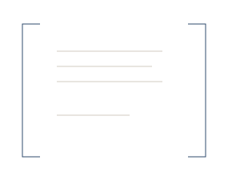
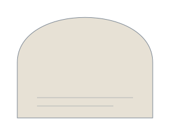
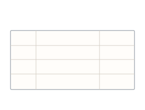

Claims Review
Proposed moduleIncident timeline and photo/invoice organizer.
DEMO · PH-01 · 12 FEB 2026
An editorial identity and motion system for a careful, source-linked claim packet.
Brand kit · Research-stage product · No live claim service
Joined LP connects the name to a compact, serif-informed mark.
The selected Joined LP has been rebuilt as editable vector paths, with a clear L foot and open P counter. Primary, reverse, black, slate, wordmark and stacked variants are included. Clear space: at least one P-stem width. Use the optical mark for compact applications.
One core palette, distinct surfaces and accessible semantic roles.
Amber communicates an evidence gap; it is never decorative or a primary CTA color. Green means a review event was recorded, never insurer approval. Dark mode changes semantic roles, not the meaning of a state.
Open measured color pairings →Serif for the story, sans for the task, mono for the record.
Connect policy references, incident photos and source figures in one reviewable packet. Keep missing evidence and disputed assumptions visible for your supervising professional.
Synthetic example. Not a payout estimate.
All three font families are self-hosted with their OFL licenses. Use italics selectively in display headings; avoid italics in dense forms and financial values. No more than one italic emphasis per heading.
Reuse spacing rules; vary the visible composition and visual story.
| Surface | Grid | Gutter and rhythm |
|---|---|---|
| Desktop 1200px content / 1440px wide visual | 12 columns / 24px gap | 64px outer gutter / 96–128px chapters |
| Tablet | 8 columns / 24px gap | 32px gutter / 80px chapters |
| Mobile | 4 columns / 16px gap | 24px gutter / 64px chapters |
| Article and policy copy | 680px reading width | Left aligned / 55–70 character line length |
| Buttons, inputs and records | 48px primary controls / 44px touch targets | 12–16px internal gaps / 2–8px corner radii |
Align copy to a shared left edge. Give data its own tabular right edge. Use margin rails, broad horizontal chapters, split evidence panels, a single soft arch and unboxed offer rows instead of repeated card grids.

margin frame
soft arch
ledger bandLive specimens. Try hover, keyboard focus and reduced motion.
Flip and shutter effects are accent interactions, not a universal style. Use shutter for primary actions, underline for text links and source highlight for evidence. No magnetic cursors, big card tilts or hidden critical content.
The visual system is broader than a single rounded rectangle.
Incident timeline and photo/invoice organizer.
DEMO · PH-01 · 12 FEB 2026
Source-linked policy questions for professional review.
DEMO · POL-01 · v1
Working papers linked to source records.
DEMO · REV-01 / REV-02
Requests, source-stated dates and approved drafts.
DEMO · REQ-01 · 06 MAR
Reconciliation and a professional-review packet.
DEMO · Settlement not supplied
A distinct review state with an explicit next action.
DEMO · 22 FEB / 25 FEB
Cards use folio tabs, margin rails, source highlighting and inset frame reveals. The hover clarifies the object; it never changes the evidence status. Source metadata stays visible before interaction.
A clean UI set, twenty larger pictograms and the requested footer marks.
Functional icons use Lucide’s clean stroke system with its license included. The 64px brand pictograms are original and editable. LinkedIn geometry comes from its official brand-linked SVG sprite; the original PNG download is retained. Social brand shapes are preserved, never morphed into LossPacket marks.
Paper grain, ledger rules, registration patterns and original still lifes.
Generated still-life assets are visual material, not real claim evidence. Keep text as live HTML outside the image, place synthetic labels on any product demonstration, and use focal-point crops so sources remain recognizable. Texture opacity stays low in margins; reading surfaces remain clear.
Source → question → review. Each animation has a reason to exist.
Synthetic example. One finite reveal; no automated approval or external action.
Synthetic example. One finite reveal; no automated approval or external action.
Synthetic example. One finite reveal; no automated approval or external action.
Synthetic example. One finite reveal; no automated approval or external action.
Synthetic example. One finite reveal; no automated approval or external action.
Synthetic example. One finite reveal; no automated approval or external action.
Synthetic example. One finite reveal; no automated approval or external action.
Synthetic example. One finite reveal; no automated approval or external action.
Synthetic example. One finite reveal; no automated approval or external action.
Synthetic example. One finite reveal; no automated approval or external action.
Synthetic example. One finite reveal; no automated approval or external action.
Motion families cover maps, networks, process diagrams, data working papers, numbered steps, professional-role pictograms, provenance/version illustrations and subtle digital patterns. Every animation has a complete still state, a replay path and global pause/reduced-motion controls.
Thirty-three page studies. One recognizable company.
These are route-specific brand studies, not the implemented company website. All 33 IA destinations have a headline, subject, background, composition and finite motion treatment. Reuse the base materials, but give each page a different evidence task and graphic arrangement. Mobile retains a readable text summary and an internally scrollable source diagram.
Editable assets and reusable behavior, with the brief’s boundaries intact.
Use collect, organize, link, inspect, question, review and prepare. Keep statements concrete and narrow.
Hero thesis: Organize property-loss evidence without promising coverage or payout.
Primary: Explore the demo.
Pilot: Discuss a paid pilot.
Walkthrough: Request a guided walkthrough.
Evidence: View the source.
Updates: Join research updates.
Every product preview is labeled DEMO — SYNTHETIC DATA and CONCEPT PREVIEW. Every offer stays a proposed module.
Keep suggested, held, rejected, professional-reviewed and owner-approved draft states distinct. Coverage and insurer determination remain outside the workflow.
Hypothetical test prices remain $750–$2,500 per bounded case preparation and $150/month broker-managed tracking. No active checkout.